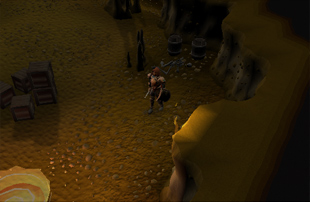
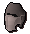
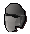
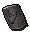
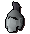
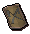
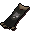
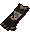

")
Castle Wars
Introduction | Location | Requirements | Recommended Items | Joining a Match | Castle Wars Matches
Siege Weapons | Game Interface | Rewards | Development Team
Siege Weapons | Game Interface | Rewards | Development Team
Castle Wars is only accessible to RuneScape Members. Please subscribe to get this feature.
Please note this is a 'Safe' activity. If you die during this activity, you will retain all of your items.
Introduction

Castle Wars is a combat-based team game, the goal of which is to breach the other team's defences and capture the flag atop their castle, while also defending your own castle and flag. Your team will score one point for each time it manages to capture the enemy flag, and the team with the most points at the end of the match wins!
Location

The fastest way to get to Castle Wars is to use a ring of duelling, which will teleport you directly there. If you have access to the fairy ring network, you can travel to BKP, which is just south of Castle Wars. Various teleport spells will get you within walking distance, such as Ardougne Teleport and Watchtower Teleport.
Requirements
There are no requirements to join in - just turn up and choose a side! Make sure you are not wearing a helmet or cape, though.
Recommended Items
We recommend that you bring a good choice of armour and weaponry to protect you from any opponent. Also, a good source of potions will aid you in difficult situations. If you've bought any of the Castle Wars rewards, you may wish to bring those, as some have effects that will prove beneficial during a match.
You may also be tempted to bring a Castle Wars bracelet, which increases the potency of bandages used during a match.
Note: Non-combat items are not allowed in the arena, e.g. food.
Joining a Match

To join a match, choose which team you would like to be on and enter a portal. Entering the red portal on the left will enrol you on the Zamorak team, and entering the blue portal on the right will enrol you on the Saradomin team. The green portal in the middle is the Guthix portal; if you choose to go through this portal you will be enrolled on whichever team currently has the fewest players, be that Saradomin or Zamorak. Once you have entered a portal, you will be taken to that team's waiting area.
![[image]](../../img/main/kbase/minigames/castlewars/castle_wars_sheep.gif) If you enter a portal wearing an item that represents one of the other gods (e.g. entering the Zamorak portal wearing an item of Saradomin), then you will change form and remain that way until the game starts. Zamorak punishes you by turning you into an imp; Saradomin gives you some time to reflect on things as a rabbit; Guthix makes you one with nature as a, er, sheep. Don't worry, though: you'll only remain in this form until either the match begins or you use the exit portal.
If you enter a portal wearing an item that represents one of the other gods (e.g. entering the Zamorak portal wearing an item of Saradomin), then you will change form and remain that way until the game starts. Zamorak punishes you by turning you into an imp; Saradomin gives you some time to reflect on things as a rabbit; Guthix makes you one with nature as a, er, sheep. Don't worry, though: you'll only remain in this form until either the match begins or you use the exit portal.
If there is a game in progress, you may observe the action from the viewing orb near Lanthus, which will allow you to survey the battlefield from a variety of viewpoints. Castle Wars matches last for twenty minutes, with a five minute interval between each one. It is in the five minutes between matches that you will go to the waiting area. A message will be shown at the top of the screen indicating the length of time remaining to the start of the next match.
Castle Wars Matches

Don't linger in the starting room for too long, though, as if you haven't left within the first two minutes of the match you'll be dumped back into your team's waiting area for the next match to begin. Also, note that only members of your team are able to enter this starting room; likewise, you will not be able to get into your opponents' starting room.


| Item | Use |
![[image]](../../img/main/kbase/items/misc/emptybucket.gif) Empty bucket |
Can be filled with water from a water source and used to extinguish flaming catapults, ballistas and barricades. |
![[image]](../../img/main/kbase/items/misc/climbing_rope.gif) Climbing rope |
Can be used to scale the walls of your opponents' castle (must first be tied to that castle's battlements on the first floor). |
![[image]](../../img/main/kbase/items/misc/cw_barricade.gif) Barricade |
Used to block enemy movement (your team may only place up to ten at a time). |
![[image]](../../img/main/kbase/items/potions/other_potions/explosive_potion.gif) Explosive potion |
Used to destroy barricades, rocks in the underground tunnels, or the enemy catapult. If dropped, this can cause you damage! |
![[image]](../../img/main/kbase/items/misc/toolkit.gif) Toolkit |
Used to repair your catapult or doors when they are broken. |
![[image]](../../img/main/kbase/items/pickaxes/bronze_axe1.gif) Pickaxe |
Used to remove rocks from and collapse the underground tunnels. |
![[image]](../../img/main/kbase/items/misc/cw_rock.gif) Rock |
Used as ammunition for your catapult. |
![[image]](../../img/main/kbase/items/misc/cw_flare.gif) Flare |
Used to signal your current location to a teammate who is manning the catapult. |
![[image]](../../img/main/kbase/items/misc/bandage.gif) Bandage |
Found in the starting room, not the storeroom. These heal up to 100 life points, restore 30% of your run energy and cure you of poisons. |
![[image]](../../img/main/kbase/items/lanturns_candle_torch/tinderbox1.gif) Tinderbox |
Found in the starting room, not the storeroom. Used to set fire to barricades, ballistas and catapults. |
Ground Floor Map

Once outside of your castle, there are three main above-ground routes to the enemy castle. You can follow the outer walls to either of the stepping stone crossings in opposite corners, or you can head around the spear walls and over a bridge to the cental island (there are two trapdoors on the central island that lead down into the centre of the underground tunnels).
| Zamorak team flag | Zamorak team catapult | Stepping stones | |||
| Ladders to underground tunnels | Saradomin team flag | Saradomin team catapult |
Underground Tunnels Map

Along each of the four tunnels underground are rocks that you will have to mine your way past (so make sure you've taken a pickaxe from your storeroom before coming down here). If one of these tunnels has been cleared of rocks, you'll then be able to mine the wall nearby to collapse the area again. Be careful if the tunnel is clear and one of your opponents is mining the wall - if you don't stay clear of them, the tunnel may just collapse on your head!
The tunnels underground are narrow so you can use the barricades to block the tunnels. If this is used to stop you, you can remove the barricades by attacking them, or setting them alight using a tinderbox (also found on the table of the ground floor).
| Zamorak waiting area | Collapsed/collapsible tunnels | Saradomin waiting area |
Siege Weapons
Both teams can make use of siege weapons to help defend their castle. Each team will have one catapult on the first floor of their castle, which can be used to attack area out in the open. Also, if one member of your team has brought a ballista with them (after buying all four parts of it and some ammo for it from the Castle Wars reward shop), they can set that up on one of the eight ballista platforms.
Using the Catapult

To aim the catapult, click one of the grid squares displayed in the interface (the catapults' range lets you fire up to, but not over the river); the chosen square will be highlighted red. Then, click on the FIRE! button to fire at this location.
If a teammate is in the field using flares, the location at which a flare was fired will be highlighted yellow. You can't hurt your teammates with your catapult, so fire away! With careful teamwork, this use of flares can allow you to make precise, effective use of the catapult (particular to destroy enemy ballistas), rather than just flinging rocks with it at random.
The enemy has a catapult too, so it's good to know that you can sabotage it. To disable the other team's catapult, use a tinderbox or explosive potion with it to set it on fire. If this happens to your catapult, it can be repaired to full working use with a toolkit.

Using a Ballista

As with catapults, enemy ballistas can be attacked and destroyed, so defend them well. If protected and well maintained, they can be a powerful tool in your defensive arsenal.

Game Interface
During a match, there will be an overlay on the game window that gives you information about the current match in progress. Except for the Time Remaining icon, the icons below have multiple possible states. Simply put, though, if the status is shown in green, that defence is safe, but if shown in red has been sabotaged. The flags have a third state to say if a flag has been dropped (i.e. not being carried or in its flag stand), which is shown in yellow.
| Icon | Green message | Red message |
Saradomin flag status |
Safe | Taken |
Zamorak flag status |
Safe | Taken |
Main gate icon |
The gate will display a green health bar. The more damaged it received, the more the bar will turn red | |
|
Side door icon |
Locked | Unlocked |
Tunnel icon 1 and 2 |
Collapsed | Cleared |
Catapult status |
Operational | Damaged |
![[image]](../../img/main/kbase/minigames/castlewars/time_left.gif)
Time remaining |
- | - |
Rewards
Once a match is over (after twenty minutes), all players on the winning team will receive two Castle Wars tickets. In the event of a tie, all players on both teams will receive one Castle Wars ticket. These tickets can be saved up and exchanged for many rewards, by trading with Lanthus at the entrance to Castle Wars. The rewards that can be purchased are listed in the table below. Note that any rewards that you purchase can be traded back to Lanthus for however much your purchased them for. This way, you could buy all parts of the basic decorative armour, then trade up to the detailed decorative armour, piece by piece, as you earn more Castle Wars tickets.
| Item | Ticket cost |
|  Basic decorative helm |
5 |
![[image]](../../img/main/kbase/armour/melee/cw1_platebody.gif) Basic decorative platebody1 |
8 |
![[image]](../../img/main/kbase/armour/melee/cw1_platelegs.gif) Basic decorative platelegs1 |
6 |
![[image]](../../img/main/kbase/armour/melee/cw1_shield.gif) Basic decorative shield1 |
4 |
![[image]](../../img/main/kbase/weapons/melee/cw1_sword.gif) Basic decorative sword |
6 |
|  Detailed decorative helm |
50 |
![[image]](../../img/main/kbase/armour/melee/cw2_platebody.gif) Detailed decorative platebody2 |
80 |
![[image]](../../img/main/kbase/armour/melee/cw2_platelegs.gif) Detailed decorative platelegs2 |
60 |
|  Detailed decorative shield2 |
40 |
![[image]](../../img/main/kbase/weapons/melee/cw2_sword.gif) Detailed decorative sword |
60 |
|  Intricate decorative helm |
500 |
![[image]](../../img/main/kbase/armour/melee/cw3_platebody.gif) Intricate decorative platebody3 |
800 |
![[image]](../../img/main/kbase/armour/melee/cw3_platelegs.gif) Intricate decorative platelegs3 |
600 |
![[image]](../../img/main/kbase/armour/melee/cw3_shield.gif) Intricate decorative shield3 |
800 |
![[image]](../../img/main/kbase/weapons/melee/cw3_sword.gif) Intricate decorative sword |
600 |
![[image]](../../img/main/kbase/armour/melee/cw4_helm.gif) Profound decorative helm |
650 |
![[image]](../../img/main/kbase/armour/melee/cw4_platebody.gif) Profound decorative platebody4 |
1100 |
![[image]](../../img/main/kbase/armour/melee/cw4_platelegs.gif) Profound decorative platelegs4 |
800 |
|  Profound decorative shield4 |
500 |
![[image]](../../img/main/kbase/weapons/melee/cw4_sword.gif) Profound decorative sword |
800 |
![[image]](../../img/main/kbase/minigames/castlewars/guthix_halo.gif) Guthix halo* |
300 |
![[image]](../../img/main/kbase/minigames/castlewars/saradomin_halo.gif) Saradomin halo* |
300 |
![[image]](../../img/main/kbase/minigames/castlewars/zamorak_halo.gif) Zamorak halo* |
300 |
![[image]](../../img/main/kbase/armour/melee/cw_faithful_shield1.gif) Faithful shield |
200 |
![[image]](../../img/main/kbase/items/clothing/saradomin_team_hood.gif) Saradomin team hood |
10 |
![[image]](../../img/main/kbase/items/clothing/saradomin_team_cape.gif) Saradomin team cape |
10 |
![[image]](../../img/main/kbase/items/clothing/zamorak_team_hood.gif) Zamorak team hood |
10 |
![[image]](../../img/main/kbase/items/clothing/zamorak_team_cape.gif) Zamorak team cape |
10 |
![[image]](../../img/main/kbase/items/clothing/castle_wars_flag_cape.gif) Castle Wars flag cape~ |
2 |
![[image]](../../img/main/kbase/items/clothing/castle_wars_kills_cape.gif) Castle Wars kills cape~ |
2 |
|  Castle Wars hobbyist cape~ |
2 |
![[image]](../../img/main/kbase/items/clothing/castle_wars_enthusiast_cape.gif) Castle Wars enthusiast cape~ |
2 |
|  Castle Wars professional cape~ |
2 |
![[image]](../../img/main/kbase/minigames/castlewars/ballista_base.gif) Ballista base# |
2 |
![[image]](../../img/main/kbase/minigames/castlewars/ballista_ammo_stock.gif) Ballista bolt stack# |
2 |
![[image]](../../img/main/kbase/minigames/castlewars/ballista_bow.gif) Ballista bow# |
2 |
![[image]](../../img/main/kbase/minigames/castlewars/ballista_chamber.gif) Ballista chamber# |
2 |
![[image]](../../img/main/kbase/minigames/castlewars/ballista_ammo.gif) Ballista ammo# |
4 |
![[image]](../../img/main/kbase/minigames/castlewars/melee_potion_set.gif) Melee potion set+ |
1 |
![[image]](../../img/main/kbase/minigames/castlewars/ranged_potion_set.gif) Ranged potion set+ |
1 |
![[image]](../../img/main/kbase/minigames/castlewars/magic_potion_set.gif) Magic potion set+ |
1 |
1Wearing the basic platebody, platelegs and shield during a Castle Wars match gives you +10% damage against the enemy team.
2Wearing the detailed platebody, platelegs and shield during a Castle Wars match gives you +15% damage against the enemy team, and +10% damage against barricades/ballistas.
3Wearing the intricate platebody, platelegs and shield during a Castle Wars match gives you +20% damage against the enemy team, +10% damage against barricades/ballistas, and immunity from catapult damage.
4Wearing the profound platebody, platelegs and shield during a Castle Wars match gives you +25% damage against the enemy team, +10% damage against barricades/ballistas, and immunity from catapult/ballista damage.
*Guthix halo reduces the drain rate of the prayers Clarity of Thought, Improved Reflexes, Incredible Reflexes, Chivalry, Piety; Saradomin halo reduces the drain rate of Thick Skin, Rock Skin, Steel Skin, Chivalry, Piety; Zamorak halo reduces the drain rate of Burst of Strength, Superhuman Strength, Ultimate Strength, Chivalry, Piety.
~Each cape can only be purchased after: getting the most flag captures in a match (flag cape); getting the most kills in a match (kills cape); completing 500 matches (hobbyist cape); completing 1,000 matches (enthusiast cape); and completing 5,000 matches (professional cape).
#Before you can use a ballista in a Castle Wars match, you must purchase all four ballista parts and at least one bit of ammo for it. You can take up to 100 bits of ammo with you into a match.
+Melee potion set contains 1x Super Attack, 1x Super Strength, 1x Super Defence, 1x Super Energy.
Ranged potion set contains 1x Ranging potion, 1x Super Defence, 1x Super Energy.
Magic potion set contains 1x Magic Essence, 1x Super Defence, 1x Super Energy.
The potions in these sets may only be used during a Castle Wars match.
For stats of the reward items that can be worn/wielded, see Melee - Castle Wars Items.
Development Team
| Original | Rework | |||
| Developer: | Graham B | Developer: | Tim C | |
| Graphics: | Joe R, John S | Graphics: | Alec V, Gurpreet K | |
| QA: | Danny G | QA: | Thomas H, Adam D, Liam H | |
| Audio: | Ian T | Audio: | Sam J | |

More articles in
Activities
|
|
|
Further Help
If this article does not help you, you may find the following sections of the RuneScape site helpful:
|
|